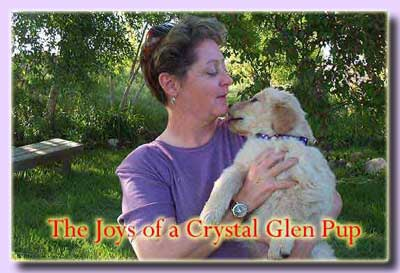

WHAT MAKES US SO SPECIAL: In order to produce the absolute top of line Golden Retriever puppies, we search the world over for the ideal Golden Retrievers. A quest to bring the finest Golden Retrievers into our bloodlines. This quest has taken us to Europe, Australia, Canada and back to U.S., looking for the absolute best of the best. Our committed to producing only Golden Retrievers puppies of the highest quality shows in our record. We have Six girls that have been awarded the title of Outstanding Dam. We also have Three boys who are Outstanding Sires. This award is given to dogs by the Golden Retriever Club of America who have produced progeny of exceptional quality. We have produced over 50 American Champions, numerous Canadian Champions, and dogs with performance titles too numerous to list. This is unsurpassed in the Rocky Mountain region. So if you are looking for a companion Golden Retriever that is backed by such a record and has over 40 years years of knowledge put into each breeding you have come to the right place. |
OUR BREEDING PHILOSOPY IS A BIT UNIQUE: 1. We only breed when we are going to keep a pup for ourselves. - Each breeding has an incredible amount of research put into it for the future of our breeding program. So every litter we produce has our heart and soul put into it. 2. As stated our goal is to produce a Golden Retriever that is as close to perfection as is possible. An all- around dog that can live in any situation. The city, suburbs or the country. We place all pups that we do not own or co-own in companion homes - like yours. 3. The perfection we seek is to have pups with correct temperament, good health (all health issues), longevity and athleticism. This commitment allows our Golden Retrievers to excel in every venue: home companion, conformation, agility, obedience, rally, nose work, therapy dogs as well as companion hunters. 4. All our dogs are health tested before being bred. Hips, Eyes, Hearts, Elbows, Thyroid, and numerous other genetic tests. |
| Note: We do everything possible to insure that our puppies are healthy, long lived individuals. However as with all things there are no guarantees. In today's world we can not guarantee the health of our children, so until that can be done we can not do so in dogs. Forty plus years of breeding has shown us that. All our pups are given a thorough vet check-up before heading to their new homes. |
 |
Crystal Glen 2025 - all rights reserved |